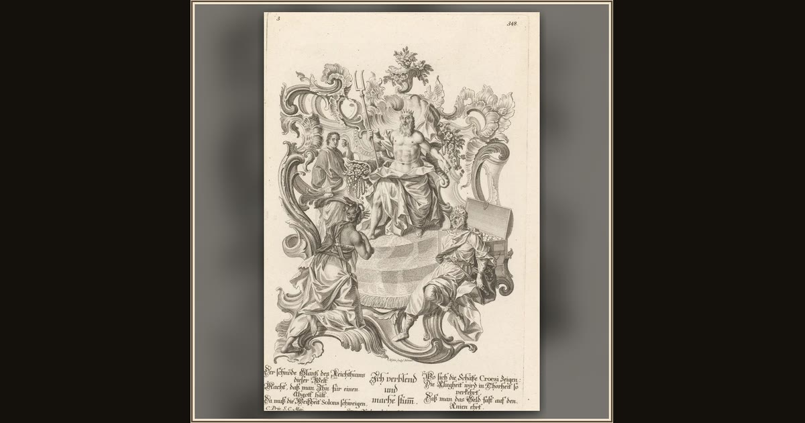

Croesus en Solon
Michael Rössler, after design by Jeremias Wachsmuth; published by Martin Engelbrecht · 1715 - 1777 · rijksmuseum
Croesus sits beside an open chest of coins in an allegory of his meeting with Solon, whose warning distinguishes riches from a fortunate life (1.32.6) Explore its place in Herodotus's Histories, Book I, chapter 104.